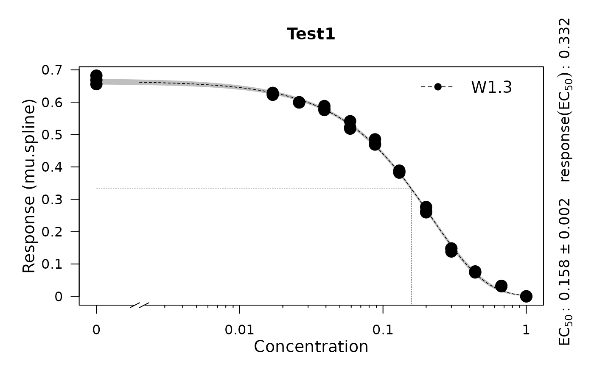
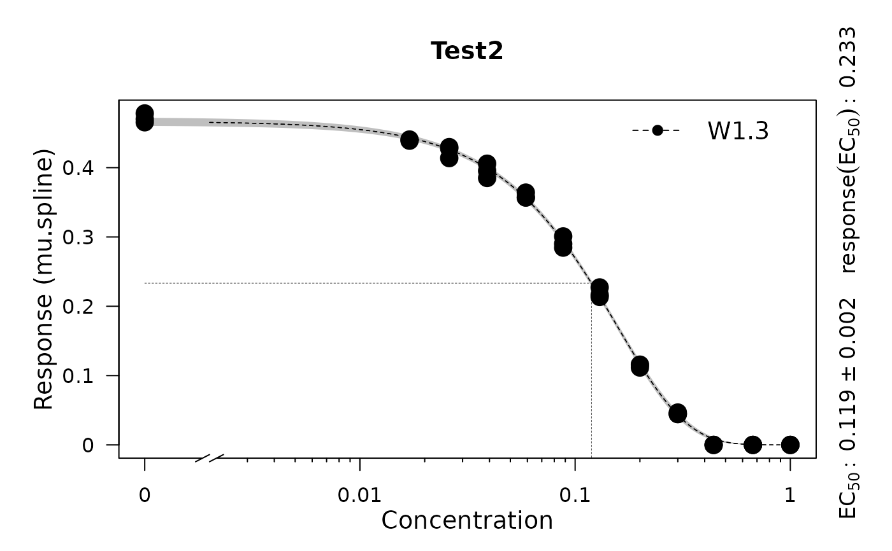

The function calls the baranyi function to generate curves between time zero and t and adds some random noise to the x- and y-axes. The three growth parameters given as input values will be slightly changed to produce different growth curves. The resulting datasets can be used to test the growth.workflow function.
Source: R/utils.R
rdm.data.RdThe function calls the baranyi function to generate curves between time zero and t and adds some random noise to the x- and y-axes. The three growth parameters given as input values will be slightly changed to produce different growth curves. The resulting datasets can be used to test the growth.workflow function.
Arguments
- d
Numeric value, number of data sets. If
dis a vector, only the first entry is used.- y0
Numeric value, start growth. If
tis a vector, only the first entry is used.- tmax
Numeric value, number of time points per data set. If
tis a vector, only the first entry is used.- mu
Numeric value, maximum slope. If
muis a vector, only the first entry is used.- lambda
Numeric value, lag-phase. If
lambdais a vector, only the first entry is used.- A
Numeric value, maximum growth. If
Ais a vector, only the first entry is used.- label
Character string, condition label If
labelis a vector, only the first entry is used.
Value
A list containing simulated data for three tests (e.g., 'organisms'):
- time
numeric matrix of size
dxt, each row represent the time points for which growth data is simulated and stored in each row ofdata.- data
data.frame of size
dx(3+t), 1. column, character as an experiment identifier; 2. column: Replicate number; 3. column: concentration of substrate of a compound under which the experiment is obtained; 4.-(3+t). column: growth data corresponding to the time points intime.
References
Matthias Kahm, Guido Hasenbrink, Hella Lichtenberg-Frate, Jost Ludwig, Maik Kschischo (2010). grofit: Fitting Biological Growth Curves with R. Journal of Statistical Software, 33(7), 1-21. DOI: 10.18637/jss.v033.i07
Examples
# Create random growth data set
rnd.data1 <- rdm.data(d = 35, mu = 0.8, A = 5, label = 'Test1')
rnd.data2 <- rdm.data(d = 35, mu = 0.6, A = 4.5, label = 'Test2')
rnd.data <- list()
rnd.data[['time']] <- rbind(rnd.data1$time, rnd.data2$time)
rnd.data[['data']] <- rbind(rnd.data1$data, rnd.data2$data)
# Run growth curve analysis workflow
gcFit <- growth.gcFit(time = rnd.data$time,
data = rnd.data$data,
parallelize = FALSE,
control = growth.control(fit.opt = 's',
suppress.messages = TRUE))
# \donttest{
# Perform dose-response analysis
drFit <- growth.drFit(gcTable = gcFit$gcTable,
control = growth.control(dr.parameter = 'mu.spline'))
#>
#> === EC 50 Estimation ==============================
#> ---------------------------------------------------
#> --> Checking data ...
#> --> Number of distinct tests found: 2
#> --> Valid datasets per test:
#> TestID Number
#> Test1 35
#> Test2 35
# Inspect results
summary(drFit)
#> Test log.x log.y Samples EC50.Estimate EC50.Std..Error EC50.Lower EC50.Upper
#> 1 Test1 FALSE FALSE 0 0.1569574 0.002351917 0.1521667 0.1617481
#> 2 Test2 FALSE FALSE 0 0.1160763 0.001605326 0.1128064 0.1193463
#> yEC50 test model
#> 1 0.3333910 mu.spline W1.3
#> 2 0.2343433 mu.spline W1.3
plot(drFit)


# }